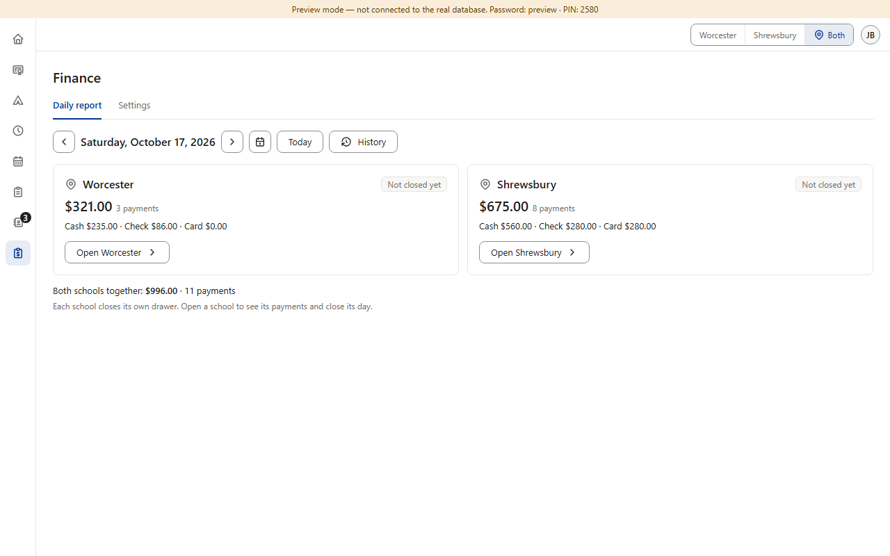
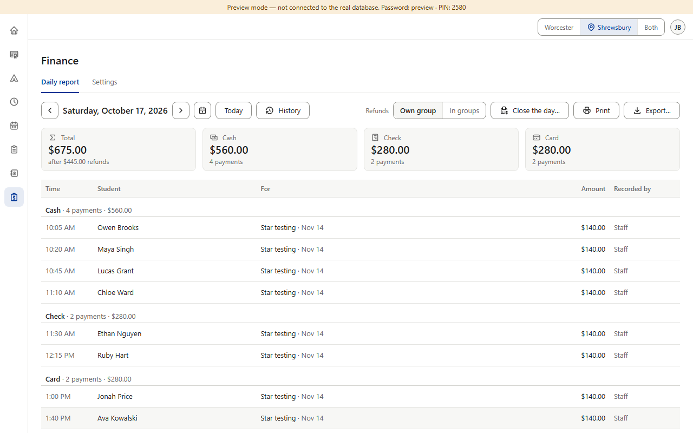
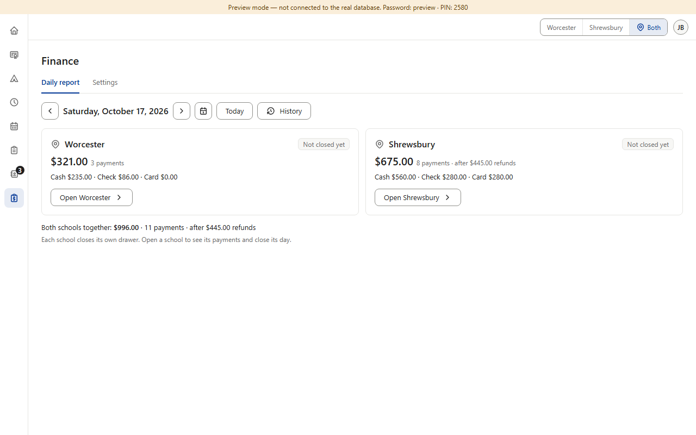
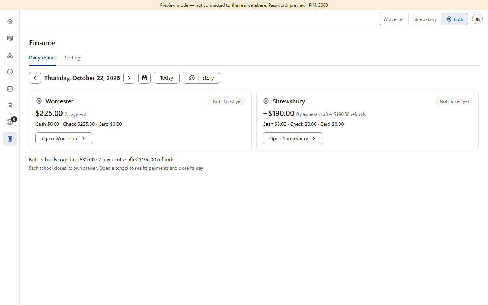
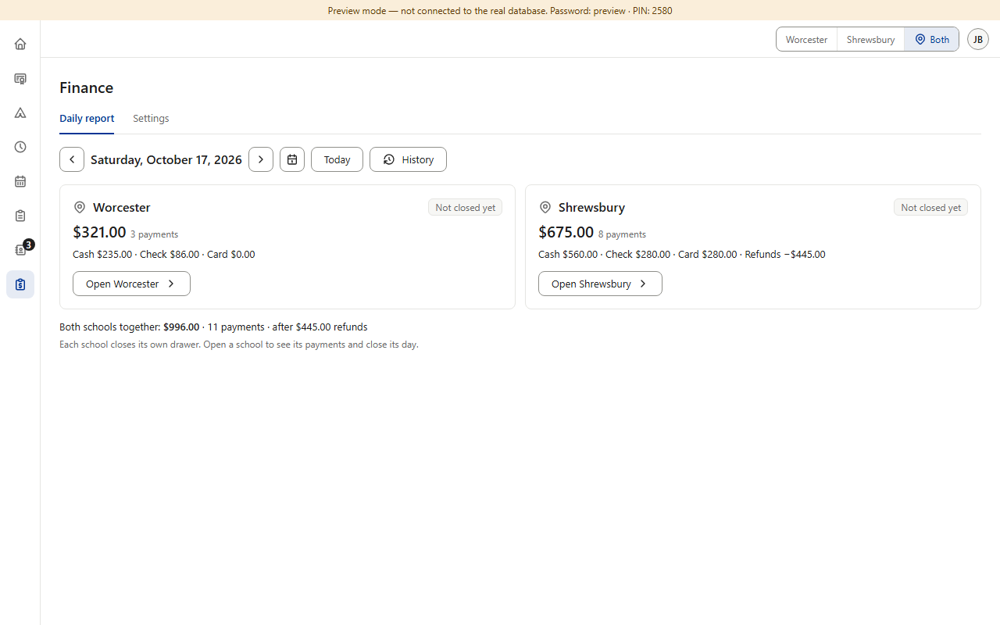

Open detail D3 · Finance on Both: a school's total after refunds
A side finding from item 15c; for Finance's prompt. On Both, each school's box shows its total after refunds, but “Cash · Check · Card” are the money that came in, so on a refund day they add up to more than the total and nothing says why (picture 1: Shrewsbury $675.00, yet $560 + $280 + $280 = $1,120). A day with only refunds shows “−$190.00 · 0 payments” over three zeros (picture 2). “Both schools together” has the same gap. The one-school report already explains it: its Total card says “after $445.00 refunds” (approved v0.209, picture 4). The boxes can work the refunds out from their own numbers (cash + check + card − total), so no database change is needed. (Preview screenshots · PC size · fake data)
Today

1. Saturday, Oct 17, on Both — Shrewsbury's box: $675.00, but Cash + Check + Card = $1,120: $445 of refunds came off, and nothing says so. (Worcester's box that day has no refunds and adds up: $235 + $86 = $321.)
2. Thursday, Oct 22 — Shrewsbury had only refunds: “−$190.00 · 0 payments” over three zeros.
3. Under the boxes, Oct 22: “Both schools together” is after refunds too, and doesn't say so (Worcester $225 − Shrewsbury's $190 refunds = $35).

4. The model — Shrewsbury's own report, Oct 17: the Total card says “after $445.00 refunds”; its Cash, Check and Card cards show the money in (v0.209).
Options B and C, drawn

5. Option B (recommended): the total gets the Total card's words — “8 payments · after $445.00 refunds”. A box with no refunds stays as it is.

6. B on the refunds-only day: “−$190.00 · 0 payments · after $190.00 refunds”.
7. B (and C) under the boxes: “Both schools together: $35.00 · 2 payments · after $190.00 refunds”.

8. Option C: the line adds up instead — “Cash $560.00 · Check $280.00 · Card $280.00 · Refunds −$445.00”.
Pictures 5–8 are drawn over the real boxes; nothing in the app was changed. Money keeps Finance's cents ($675.00), as item 17a decided for its report.
Your choice — one question: what should a school's box say on a day with refunds? A · Keep as today.+ no work. − the numbers don't add up and nothing says why; a refunds-only day reads “−$190.00 · 0 payments” over zeros. B · Recommended: the Total card's words (pictures 5–7). “after $X refunds” next to the total, and on “Both schools together”. + the same words, in the same place, as the one-school report (v0.209); small. − to see the arithmetic you still subtract in your head. C · A refunds part in the line (picture 8).+ the line adds up on paper: in, minus refunds, equals the total. − a fourth part the one-school cards don't have; the line gets long on phones.